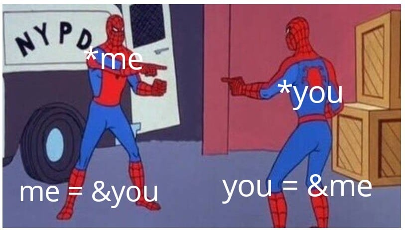

timeline
section Birth of C
1972 : nasce C (New B) presso i Bell Labs.
1973 : UNIX viene interamente riscritto in C.
section Definition of C Language
1978 : Kerninghan & Ritchie pubblicano The C Programming Language.
1989 : Primo Standard C (C89)
section Actual C
1999 : Secondo standard C (C99)
2011 : Terzo standard C (C11)
Principali momenti storici per lo sviluppo del linguaggio C
Storia e Standard
Il linguaggio C fu ideato nei Bell Laboratories della AT&T nel 1972 da Dennis Ritchie, la definizione formale avvenne nel 1978 a cura di Brian Kernighan e D. Ritchie.
Già nel 1973 il linguaggio fu usato per riscrivere completamente il sistema operativo UNIX.
La standarizzazione del linguaggio avvenne nel 1989 a cura dell’ANSI (American NaJonal Standard Institute), e in seguito venne recepita dall’ISO (InternaJonal OrganizaJon for Standardization, ISO/IEC 9899:1990).
Nel 1999 si concluse una nuova fase di standarizzazione del C, nella quale vennero aggiunte nuove funzionalità al linguaggio (ISO/IEC 9899:1999).
Caratteristiche
Si tratta di un Linguaggio Compilato
Fortemente tipato
Minimale
Permissivo (il compilatore non si lamenta!)
Tecnicamente un linguaggio di alto livello, nella pratica ha molte feature che lo rendono uno dei linguaggi di più basso livello. Specialmente sulla gestione di memoria.
Pregi e difetti
Pregi
Difetti
Efficienza
Facile fare errori
Compattezza
Può diventare difficile da leggere
Portabilità
Non ci sono controlli a run time
Permissività
Permissività
Linguaggio Strutturato
È possibile (e necessario) definire funzioni, che accettano \(N\) parametri in input e restituiscono un valore come output.
C non è un linguaggio a oggetti. Non esistono quindi le astrazioni tipiche di Java, classi, variabili di istanza, metodi…
Esistono evoluzioni del C con queste caratteristiche (C++, C# e lo stesso Java ha ereditato molto dal C).
La compilazione
Prendiamo in esame il nostro primo programma, hello.c
#include <stdio.h>/* Il mio primo programma in C! */int main(void){ printf("Hello, World!");}
La compilazione
Nel venire compilato, il nostro programma passa attraverso altri tre programmi:
Preprocessor: elimina i commenti ed esegue le direttive del preprocessore (le istruzioni che iniziano con #).
Compiler: controlla se il codice è corretto (sintatticamente) e lo converte in linguaggio macchina, generando il codice oggetto.
Linker: combina vari file oggetto e le librerie, producendo il file eseguibile. (a.out oppure a.exe)
La compilazione
Esistono comandi per accedere separatamente ai vari passaggi, ma in genere viene tutto gestito da gcc (GNU C Compiler \(\rightarrow\) GNU Compiler Collection)
Il comando chiama il preprocessore su tutti i file, per tutti compila il file oggetto e chiama il linker che li unisce nell’unico eseguibile chiamato <nome_eseguibile>
Non esegue il linking (utile se non si ha ancora il main ad esempio)
Hello world
/* Hello world a oggetti */class HelloWorld{publicstaticvoidmain(String[] args){int anno =2025;System.out.println("Hello Dati e Algoritmi "+ anno);}}
Hello world
#include <stdio.h>/* Il mio primo programma in C! */int main(void){int anno =2025; printf("Hello Dati e Algoritmi %d", anno);}
Direttiva
Hello world
#include <stdio.h>/* Il mio primo programma in C! */int main(void){int anno =2025; printf("Hello Dati e Algoritmi %d", anno);}
Direttiva
Commento
Hello world
#include <stdio.h>/* Il mio primo programma in C! */int main(void){int anno =2025; printf("Hello Dati e Algoritmi %d", anno);}
Direttiva
Commento
Funzione
Hello world
#include <stdio.h>/* Il mio primo programma in C! */int main(void){int anno =2025; printf("Hello Dati e Algoritmi %d", anno);}
Direttiva
Commento
Funzione
Dichiarazione e assegnazione di variabile
Hello world
#include <stdio.h>/* Il mio primo programma in C! */int main(void){int anno =2025; printf("Hello Dati e Algoritmi %d", anno);}
Direttiva
Commento
Funzione
Dichiarazione e assegnazione di variabile
Chiamata di funzione
Commenti
I commenti classici di C si fanno con la sintassi
/* testo del commentoint i = 0; <--- questo viene ignoratoanche su più righe */
Dal C99, si può usare anche il commento monoriga
// commento su una rigaint i =0;// questo viene eseguito// altro commento
Dichiarazioni e inizializzazioni
Tutte le variabili devono essere dichiarate prima di essere usate:
int altezza;
float temperatura, peso;
Non c’è inizializzazione di default! Occorre assegnare valori:
int altezza;
altezza = 175;
float temperatura = 36.4f; // anche subito
Keyword riservate
Non si possono usare le seguenti parole per nomi di variabili o altro:
auto break case char const continue default do
double else enum extern float for goto if
inline* int long register restrict* return short signed
sizeof static struct switch typedef union unsigned void
volatile while _Bool* _Complex* _Imaginary*
*solo da C99
Il C è case sensitive
Nomi di variabili valide sono:
int a, A; float Auto;
N.B. solo perché si può non vuol dire che sia una buona idea…
Input/Output
Abbiamo già usato nei nostri esempi l’inclusione di stdio.h
Ci ha permesso di usare la funzione printf, con la quale possiamo stampare dei risultati a terminale
L’altra importante funzione che ci permette di usare è scanf, che legge i dati forniti dall’utente a terminale
Entrambe usano testo formattato, tramite uso di simboli speciali
Output con printf
$ man 3 printfPRINTF(3) Linux Programmer's Manual PRINTF(3)NAME printf, fprintf, dprintf, sprintf, snprintf, vprintf, vfprintf, vdprintf, vsprintf, vsnprintf - formatted output conversionSYNOPSIS #include <stdio.h> int printf(const char *format, ...); int fprintf(FILE *stream, const char *format, ...); int dprintf(int fd, const char *format, ...); int sprintf(char *str, const char *format, ...); int snprintf(char *str, size_t size, const char *format, ...);...DESCRIPTION The functions in the printf() family produce output according to a format as described below. The functions printf() and vprintf() write output to stdout, the standard output stream; fprintf() and vfprintf() write output to the given output stream; sprintf(), snprintf(), vsprintf(), and vsnprintf() write to the character string str.
Il manuale
Il comando man permette di visualizzare il manuale di un comando o di una funzione. È diviso in sezioni:
Programmi eseguibili e comandi della shell
Chiamate al sistema (funzioni fornite dal kernel)
Chiamate alle librerie (funzioni all’interno delle librerie di sistema)
File speciali (di solito trovabili in /dev)
Formati dei file e convenzioni p.es. /etc/passwd
Giochi
Pacchetti di macro e convenzioni p.es. man(7), groff(7).
Comandi per l’amministrazione del sistema (solitamente solo per root)
Routine del kernel [Non standard]
Output con printf
Gli specificatori iniziano con %, e per ciascuno deve esserci un parametro dopo la stringa di formattazione
printf("Misura %d metri e %d cm \n", met, cm);
Output: Misura 2 e 15 cm
I caratteri speciali sii scrivono con \ (backslash) il carattere di escaping
%e per float in notazione scientifica, es. \(5.2\times 10^4\)
%lf per double, es. \(3.14\)
%s per stringhe, es. "ciao"
%c per caratteri, es. 'a'
%p per puntatori, es. 0x7fffbf7f3b4c
%x per interi in esadecimale, es. ff
%o per interi in ottale, es. 77
%Nf per avere \(N\) “spazi” per la stampa, es. %5d per 112 con due spazi vuoti prima
%.Nf per float con \(N\) cifre decimali, es. %.2f per \(3.14\)
String format
Si è già visto \n per andare a capo, ma ce ne sono altri:
\n per andare a capo
\t per tabulare
\b per backspace
\\ per stampare il backslash
\" per stampare le virgolette
\0 per terminare una stringa
Input con scanf
scanf esegue pattern matching sull’input per popolare delle variabili
int base, altezza;scanf("%d%d",// pattern&base,&altezza // variabili da popolare);
Per esempio se l’utente scrive 3 4 e preme invio, base sarà 3 e altezza sarà 4.
Input con scanf
scanf scorre l’input ignorando ogni carattere bianco (spazi, tabulazioni, a capo).
Se trova caratteri compatibili (+/-, 0-9, .) li legge e li converte nel tipo di variabile corrispondente.
Popola le variabili fino a trovare un carattere bianco o un carattere non compatibile.
Input con scanf
&base?
È un puntatore! Per poter salvare in memoria il valore letto da scanf è necessario passare l’indirizzo di memoria della variabile, non la variabile stessa.
Avviso
Dimenticarsi il simbolo & in questo caso darà un errore a runtime
Input con scanf
Un puntatore è un indirizzo di memoria. Quando si passa un puntatore a una funzione, si passa l’indirizzo di memoria della variabile, non la variabile stessa. Questo permette alla funzione di scrivere direttamente nella variabile, senza doverne fare una copia.

Input con scanf
Attenzione a non confonder printf e scanf, per quanto simili siano.
scanf accetta gli stessi format specifier di printf, ma alcuni hanno meno varietà. Usate per il momento solo %d e %f.
printf accetta valori, scanf accetta puntatori. Bisogna ricordarsi di non scrivere & davanti alle variabili in printf e di scriverlo in scanf (quando serve).
Si possono mettere caratteri oltre ai format specifier in una scanf, ma può creare problemi.
Esercizi
Scrivere un programma che legga due numeri e stampi la somma.
Scrivere un programma che legga due frazioni in formato "n/m" e stampi la loro somma (non semplificata).
Consiglio
In questo caso possiamo richiedere all’utente che il formato includa lo slash, e quindi includerlo nel pattern di scanf.
![]()